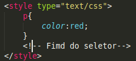

Folhas de estilos internas são adicionadas dentro da cabeça ( < head>< /head>) atravez da tag < style type="text/css">< /style>
Um seletror é exatamente o nome da tag que você deseja estilizar, sua estrutura é demonstrada logo a baixo.

É importante destacar que todas as tags < p> da sua página serão estilizadas conforme definido por este seletor no caso a cor vermelha.
Caso você queira por exemplo mudar a cor de todos os < h1> da sua pagina de uma vez só fica muito mais facio utilizando os seletores visto que ele ira selecionar todas as tags h1 e formatalas conforme definido na cabeça da página.
Mostrando o código fonte desta página você vera a aplicação mais pratica cos conceitos aque abordados.
E lembre: esta formatação se aplica apenas a pagian ao qual foi implementada.